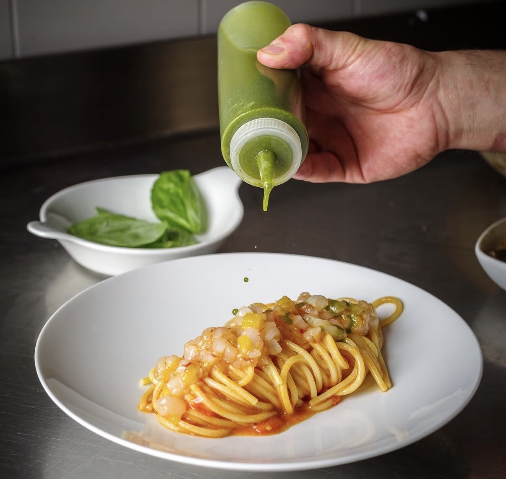
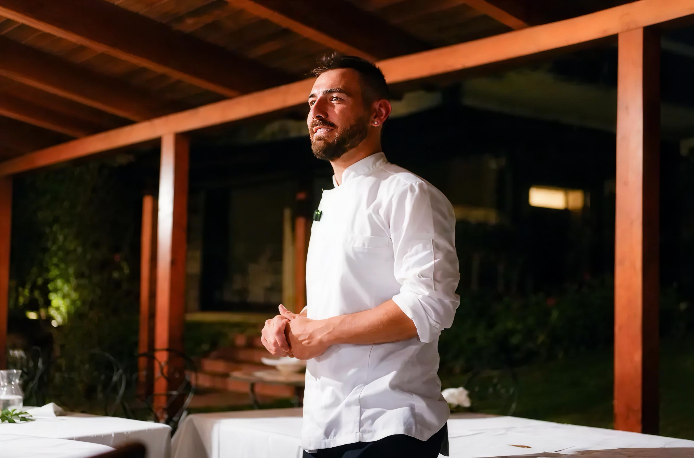
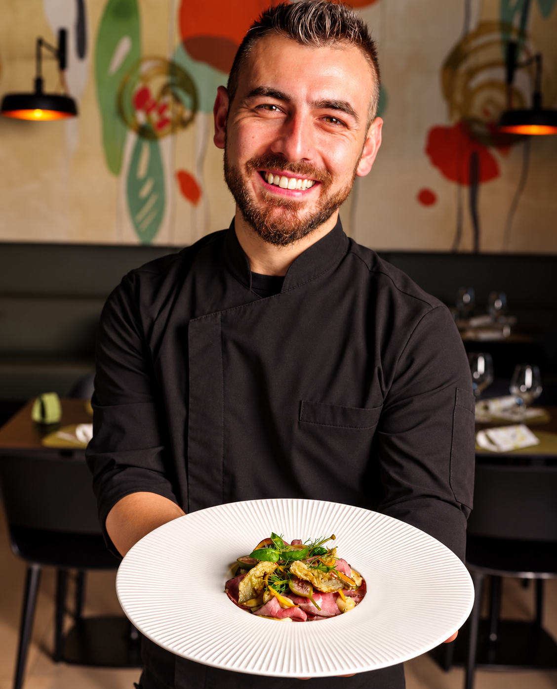
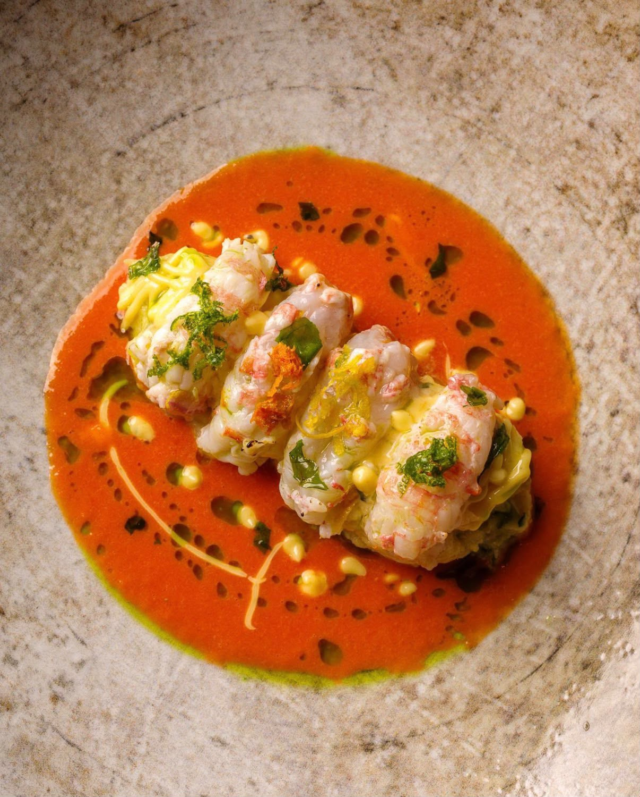
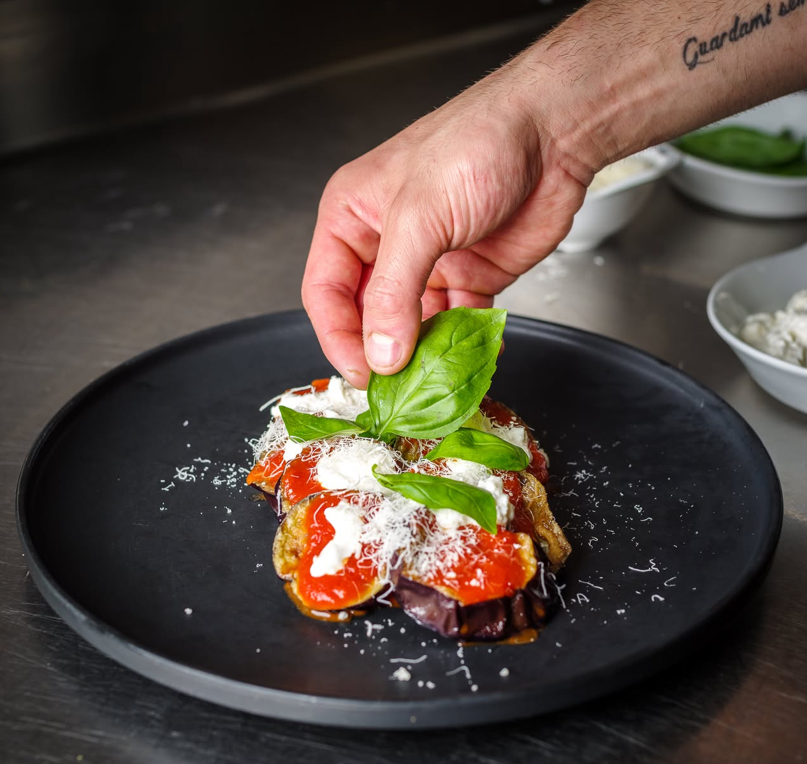
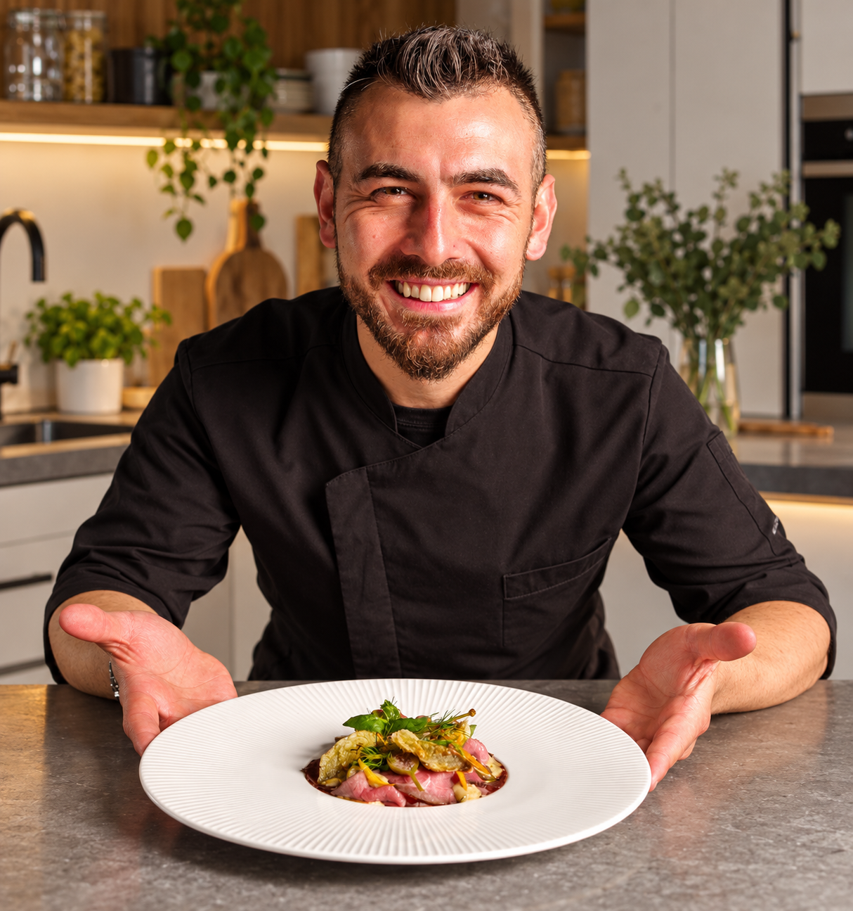
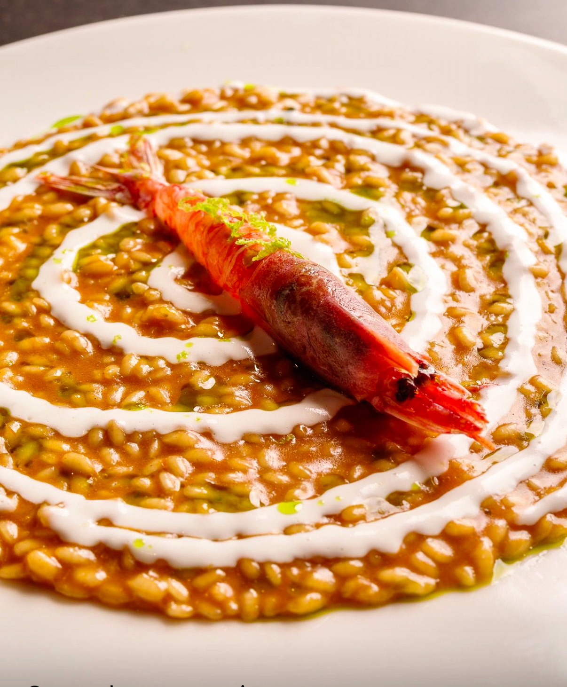

Cene private
a domicilio
Da 2 a 20 persone. Anniversari, cene di coppia, serate tra amici: un menù su misura cucinato e servito direttamente a casa tua.

PERSONAL CHEF · UMBRIA
Un personal chef direttamente a casa tua, per trasformare una cena in un momento davvero speciale.
Creo menu personalizzati, scelgo ingredienti di qualità e curo ogni dettaglio: dalla preparazione al servizio, fino all’ultimo piatto.

ARTURO · PERSONAL CHEFPer me il cibo è memoria ed emozione. Sono nato e cresciuto in Calabria, tra i profumi della cucina di mia madre e il rispetto per la terra insegnatomi da mio padre. È da quelle radici che nasce la mia passione: una tradizione fatta di ingredienti genuini e materia prima di qualità, che porto con me ovunque vada.
Da 10 anni trasformo questa passione nel mio lavoro. Come Personal Chef creo esperienze deliziose direttamente nelle case dei miei clienti. Che tu sia un amante della terra, del mare o del vegetariano, costruiremo insieme un menu su misura capace di stupire i tuoi ospiti.
E il bello qual è? Che non devi pensare a nulla. Faccio io la spesa, porto le materie prime, cucino, servo in tavola e, a fine serata, la tua cucina torna perfettamente pulita e riordinata.
A te resta solo il compito più bello: stappare una buona bottiglia, rilassarti e goderti la serata con i tuoi ospiti. Veni cùmmia!

Da 2 a 20 persone. Anniversari, cene di coppia, serate tra amici: un menù su misura cucinato e servito direttamente a casa tua.

Compleanni, lauree, feste aziendali o in villa. Buffet curati o servizio al piatto — con la cucina che diventa parte dello spettacolo.

In vacanza in un casale o in villa? Un'esperienza gastronomica italiana su misura per rendere il tuo soggiorno in Umbria indimenticabile.
Ci racconti come immagini la tua serata, noi trasformiamo le tue idee in un’esperienza su misura, pensata insieme a te..
Pensiamo insieme al percorso, scegliamo le materie prime e curiamo ogni dettaglio, dal primo piatto all’ultimo abbinamento.
Io e il mio team arriviamo a casa tua e ci occupiamo di tutto: dalla cucina al servizio, proprio come in un ristorante.
Serviamo, raccontiamo i piatti e alla fine lasciamo tutto in ordine. Tu devi solo vivere la serata.
E magari una bella vista.
Base a Foligno, copro tutta l'Umbria: Perugia, Terni, Assisi, Spoleto, Orvieto, il Lago Trasimeno e ogni casale immerso nel verde.
Fuori regione? Scrivimi — se c'è una cucina, si trova sempre il modo!

Una cena non è solo quello che arriva nel piatto.
È tutto ciò che succede intorno.
Raccontami la tua occasione. Ti rispondo entro 24 ore con una proposta di menu e un preventivo su misura. Senza impegno.
Indirizzo Email: gligoraarturo98@gmail.com

SE NON HAI LA LOCATION DOVE ORGANIZZARE IL TUO EVENTO TI AIUTIAMO NOI A CERCARLA
CONTATTACI